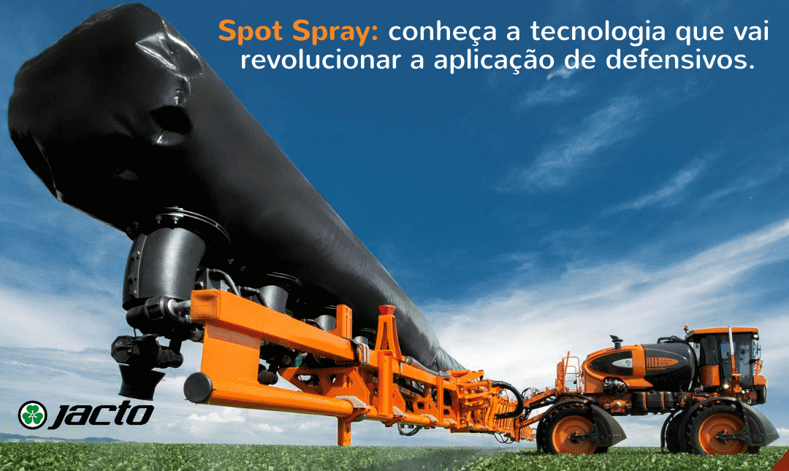
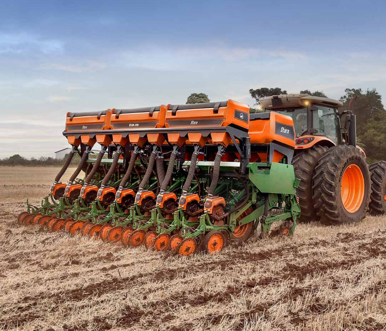
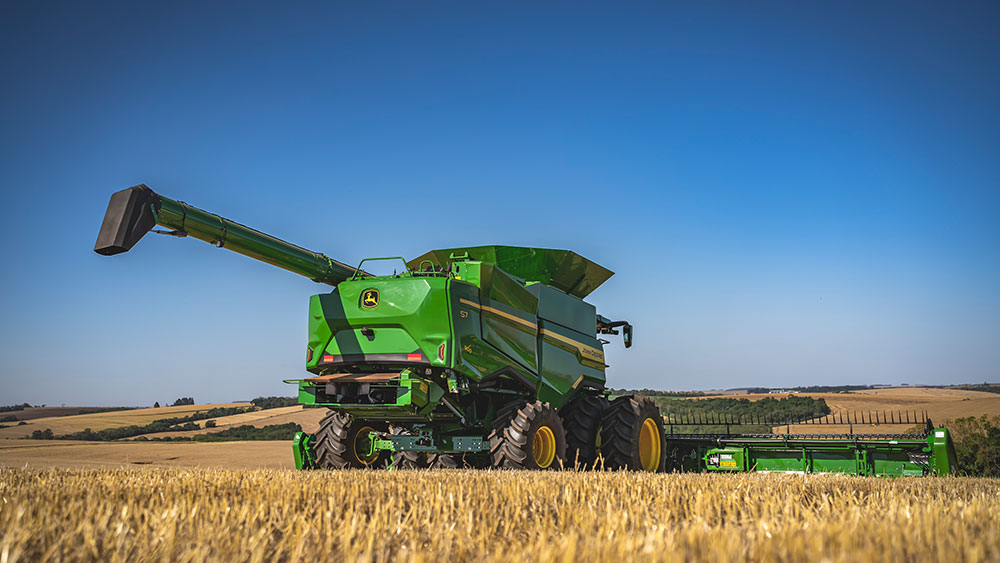

PRODUTOS

SPOT SPRAY
- Função: Pulverização localizada de herbicidas e defensivos agrícolas.
- Sistema de detecção: Câmeras ópticas ou sensores infravermelhos com identificação em tempo real (milissegundos).
- Bicos e pulverização: Bicos solenoides de resposta rápida (acionamento individual), vazão variável conforme área detectada e pressão controlada eletronicamente (2–4 bar).
- Velocidade operacional: Opera entre 12 e 25 km/h, mantendo alta precisão mesmo em velocidades elevadas.
- Taxa de aplicação: Reduz de 70% a 90% o uso de herbicidas em relação ao sistema convencional, com controle eletrônico da taxa (L/ha).
- Sistema de controle: Atuação por sensores e GPS para aplicação localizada.
- Tanque: Volume variável conforme modelo, com recirculação para uniformidade.
- Conectividade: Monitoramento remoto e integração com softwares agrícolas.
- Benefícios: Redução de desperdício, menor impacto ambiental e alta precisão operacional.

PLANTADEIRA COM CONEXÃO
- Função: Semeadura precisa com controle de profundidade e espaçamento.
- Sistemas de distribuição: Pneumático ou mecânico, garantindo uniformidade.
- Sensores e GPS: Ajuste automático da taxa de sementes e rastreamento do plantio.
- Reservatórios de sementes e fertilizantes: Medição e dosagem precisa.
- Conectividade: Telemetria, integração com softwares de gestão agrícola.
- Benefícios: Redução de desperdício, eficiência de plantio, controle total da operação.

COLHEITADEIRA S7
- Motor: Turbo diesel, alta potência, emissões controladas.
- Sistema Axial-Flow: Rotor único, alta eficiência na separação de grãos.
- Capacidade do tanque de grãos: Grande volume, esvaziamento rápido.
- Cabeçotes intercambiáveis: Milho, soja, girassol; altura ajustável.
- Transmissão: Hydrostatic ou powershift; tração 4x2 ou 4x4.
- Sistema de limpeza: Ventilador e peneiras ajustáveis para grãos limpos.
- Sensores e monitoramento: Produtividade, umidade, perdas em tempo real.
- Conectividade: GPS, telemetria, integração com softwares agrícolas.
- Cabine: Confortável, controles eletrônicos, monitor touchscreen.
- Benefícios: Alta produtividade, baixo desperdício, operação precisa e confiável.